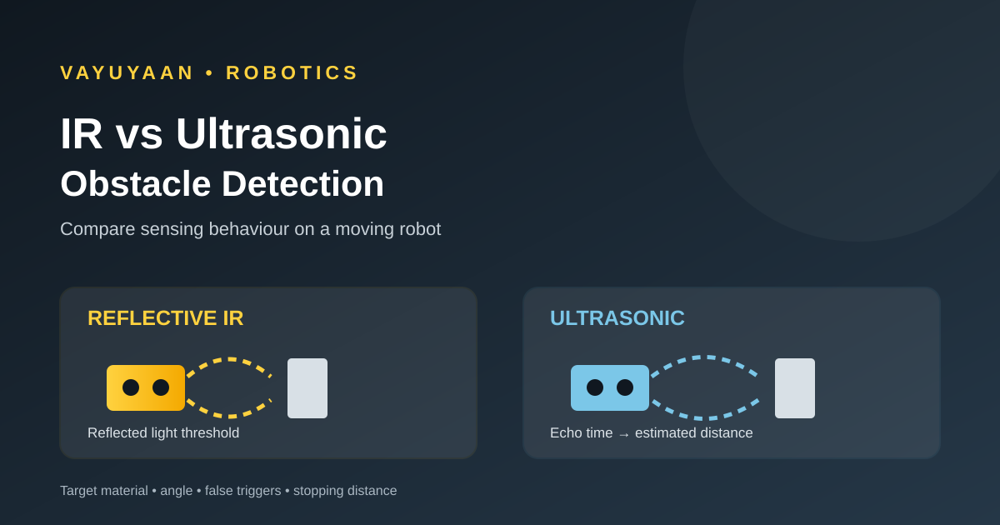
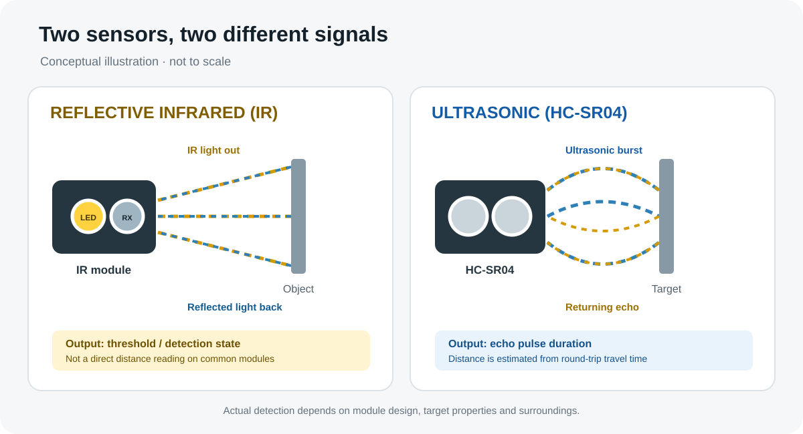

IR Sensor vs Ultrasonic Sensor: Which Is Better for Obstacle Detection?
An IR obstacle sensor and an HC-SR04 ultrasonic sensor can both help an Arduino react to nearby objects, but they do not measure the same thing. The right choice depends on whether your project needs a simple detection signal, an estimated distance, or reliable behaviour across different surfaces and environments.
If you are choosing between an IR sensor and an ultrasonic sensor for a robot, parking aid or automatic mechanism, start with the output you need. A common reflective IR module detects changes in reflected infrared light and usually gives a digital HIGH/LOW output after its onboard comparator reaches a set threshold. An HC-SR04 sends an ultrasonic burst and estimates distance from the time taken for the echo to return.
For a broad introduction to the infrared sensing method, first understand how an IR sensor works. For the ultrasonic side, the HC-SR04 ultrasonic sensor working principle and Arduino guide explains the module fundamentals. This page focuses on choosing between the two for a practical build.

Quick answer: which sensor should you choose?
Choose a reflective IR module when you need a low-cost, close-range detection signal and can control the surface, angle and mounting position. It is often a practical option for line-following robots, edge detection and simple object-presence checks.
Choose an HC-SR04 when you need an approximate distance measurement to a suitable target and want your Arduino code to make decisions at different distance thresholds. It is commonly used in obstacle-avoidance experiments, level monitoring prototypes and distance-triggered mechanisms.
How a reflective IR obstacle sensor works
A common reflective IR module contains an infrared LED and a photodetector. The LED emits infrared light. When an object is in front of the module, some of that light may reflect towards the receiver. The receiver's response changes with the reflected light level, and the module's comparator converts that response into a digital output.
Many modules include a small potentiometer. It adjusts the comparator threshold, which changes how much reflected signal is needed before the output switches. The adjustment is a sensitivity threshold, not a calibrated distance setting.
What affects IR detection?
- Surface colour and reflectivity: A light or reflective surface may return more infrared energy than a dark, low-reflectance surface at the same distance.
- Target angle: A tilted or curved object may reflect light away from the receiver.
- Ambient infrared: Strong sunlight and some artificial lighting can affect the receiver, depending on module design.
- Module adjustment: A threshold that works on a white tabletop may not work on a dark floor.
- Mounting: The emitter and receiver need a clear view of the area being monitored.
These factors explain why an IR module can detect one object reliably and miss another even when both are placed at a similar distance. Test it with the actual surfaces and lighting expected in the project.
How an HC-SR04 ultrasonic sensor works
The HC-SR04 has separate ultrasonic transmitter and receiver elements. The Arduino sends a short trigger pulse to the TRIG pin. The module emits an ultrasonic burst and raises the ECHO output while it waits for the reflected sound wave. The pulse duration represents the round-trip travel time.
For a basic estimate, the familiar calculation is:
Distance (cm) = echo time (microseconds) × 0.0343 ÷ 2
The division by two accounts for the sound travelling to the target and back. The speed-of-sound value is an approximation and changes with air temperature. The result is therefore an estimate, not a precision measurement.

What affects ultrasonic readings?
- Target angle: A flat surface facing the sensor usually returns a stronger echo than a surface angled away.
- Target material and shape: Soft, irregular or narrow objects may reflect less sound towards the receiver.
- Distance limits: Readings very close to the module or beyond its useful range may be invalid or unstable.
- Nearby objects: Walls, table edges and other objects can create unwanted echoes.
- Timing: Taking readings too quickly can allow echoes from a previous measurement to interfere with the next one.
Do not treat every pulse as a valid distance. Your sketch should use a timeout, reject missing or out-of-range readings and avoid moving a robot based on a single implausible value.
Obstacle-detection behaviour: what changes in the real world?
For a moving robot, the useful question is not simply which sensor has a longer range. It is whether the sensor detects the obstacle that matters, early enough for the robot to respond, and whether it keeps doing so as the target and environment change.
| Obstacle condition | Reflective IR module | HC-SR04 ultrasonic | What to test |
|---|---|---|---|
| Dark, matte target | May return less infrared energy and fail to cross the set threshold | Visible colour is not the sensing variable; echo depends on shape and acoustic reflection | Repeat at the same distance with light and dark samples |
| Shiny or angled surface | Reflected light may travel away from the receiver | Sound may reflect away from the receiver, causing a weak or missing echo | Change target angle in small, recorded steps |
| Thin or narrow obstacle | Detection depends on whether the object enters the module's optical field | The target may not return enough sound to the receiver | Test the actual object width and approach direction |
| Sunlit environment | Ambient infrared can affect some modules and thresholds | Not affected by optical brightness, but still subject to acoustic and environmental limits | Compare shaded and sunlit trials without changing other setup variables |
| Robot moving toward an obstacle | Usually gives a threshold event, not a distance-to-stop value | Provides an estimated distance that can be compared with a stop threshold | Measure detection repeatability and available stopping distance |
This is a practical guide to common hobby modules, not a universal performance specification. Module design, mounting, supply voltage and the exact obstacle all matter. For a broader explanation of sensor principles, wiring and general project selection, use the IR sensor vs ultrasonic sensor comparison guide.
A repeatable obstacle-detection test
Use the same test procedure for both modules. The goal is to compare repeatability under the conditions the robot will encounter, not to claim a laboratory accuracy figure.
- Fix the geometry: mount each module at its intended height and angle. Mark a straight approach path and measure target distance from the sensor face.
- Choose representative targets: include the actual obstacle materials, colours, widths and surface finishes expected in use.
- Test several distances: record detection or no-detection for the IR module and the reported distance or timeout for the HC-SR04. Repeat each position at least ten times.
- Vary one condition at a time: change target angle, lighting or approach direction while keeping the other variables fixed.
- Test while moving: run the robot at its intended speed and measure the distance remaining when the stop response begins and when the robot actually stops.
- Record failures: note missed detections, false triggers, invalid echoes and readings that jump unexpectedly. Do not discard failed readings from the comparison.
Basic connections for a controlled bench test
Typical reflective IR module connection
- VCC: connect to the supply voltage supported by your module.
- GND: connect to Arduino GND.
- OUT: connect to a digital input, such as D2.
Module pin labels and voltage requirements vary. Check the board documentation before connecting it. Some modules provide both analogue and digital outputs; use the output that matches the experiment.
Typical HC-SR04 connection
- VCC: 5V on a compatible Arduino Uno setup.
- GND: Arduino GND.
- TRIG: a digital output, for example D9.
- ECHO: a digital input, for example D10.
The HC-SR04 ECHO signal is typically around 5V. Use an appropriate voltage divider or level shifter before connecting it to a 3.3V-only microcontroller input. Do not assume every development board has 5V-tolerant GPIO.
Simple Arduino test sketches
Test each module independently before combining it with motor control or other project logic. The examples below are diagnostic starting points; change pin assignments to match your wiring.
Read a digital IR module
const int irPin = 2;
void setup() {
Serial.begin(9600);
pinMode(irPin, INPUT);
}
void loop() {
int state = digitalRead(irPin);
Serial.println(state);
delay(100);
}Move a target in and out of the detection area and observe the serial output. Whether LOW or HIGH means “detected” depends on the module's comparator and output circuit. Confirm the logic on your own board instead of copying an assumed polarity.
Measure distance with an HC-SR04
const int trigPin = 9;
const int echoPin = 10;
void setup() {
Serial.begin(9600);
pinMode(trigPin, OUTPUT);
pinMode(echoPin, INPUT);
}
void loop() {
digitalWrite(trigPin, LOW);
delayMicroseconds(2);
digitalWrite(trigPin, HIGH);
delayMicroseconds(10);
digitalWrite(trigPin, LOW);
unsigned long duration =
pulseIn(echoPin, HIGH, 30000UL);
if (duration == 0) {
Serial.println("No valid echo");
} else {
float distanceCm = duration * 0.0343f / 2.0f;
Serial.print(distanceCm);
Serial.println(" cm");
}
delay(100);
}The timeout prevents the program from waiting indefinitely for an echo. A zero duration is treated as no valid echo, not as an object at zero centimetres. For a moving robot, add filtering and a safe response to missing readings before controlling the motors.
Choose for the robot's obstacle-detection job
Use reflective IR for a controlled near-field trigger
IR is a sensible choice when the robot needs a simple presence signal at a fixed, short distance—for example, detecting an edge or checking whether an object has entered a defined zone. It is less suitable when obstacle materials vary widely or when the controller needs a meaningful distance value. Calibrate the threshold on the actual floor and target, not just on a workbench.
Use ultrasonic when the response depends on distance
The HC-SR04 is useful when the robot should slow down or stop at a distance threshold. Its reading is still an estimate: a missing echo must not be interpreted as a clear path. Define a safe response for invalid readings, filter implausible jumps and allow enough time between measurements.
Decide using the robot's stopping distance
A sensor can detect an obstacle and still be unsuitable if the robot cannot stop in time. Measure the distance travelled after the stop command at the intended speed, on the actual floor and with the actual load. Set the trigger threshold beyond that measured stopping distance, with a margin for variation. Do not treat a hobby sensor and a basic sketch as a certified safety system.
When neither module is a reliable fit
If the robot must detect a wide range of materials, thin objects, transparent surfaces or obstacles in changing outdoor conditions, test alternatives designed for the application. A single forward-facing module also leaves blind areas; sensor placement and field of view matter as much as the module choice.
Troubleshooting: when detection does not work
IR module always reports an obstacle
- Turn the sensitivity potentiometer gradually while watching the output.
- Check whether the module is facing a nearby surface or reflecting object.
- Test under the expected lighting and on the actual target material.
- Confirm the module's output polarity and supply voltage.
IR module does not detect a dark object
A dark or low-reflectance surface may return too little infrared energy. Adjust the threshold carefully, change the sensor angle or mounting distance, and test whether the chosen module is suitable for that surface. A threshold adjustment cannot make every surface equally detectable.
HC-SR04 returns zero or unstable values
- Check TRIG and ECHO wiring separately; swapped pins are a common setup error.
- Confirm common ground and stable supply voltage.
- Point the sensor at a broad, flat target during the first test.
- Use a timeout and reject missing or implausible readings.
- Allow a short interval between measurements and keep nearby objects out of the test path.
For a step-by-step diagnostic workflow, use the HC-SR04 incorrect-reading troubleshooting guide.
A short selection checklist
- Do you need a digital presence signal or an estimated distance?
- Will the target surface, colour or angle vary?
- Will the sensor operate in direct sunlight or near reflective surfaces?
- Can you mount and calibrate the sensor consistently?
- Does your controller accept the module's output voltage?
- Have you tested several real targets under the conditions where the project will run?
If you need a distance value, start with an ultrasonic module and validate its echo behaviour. If you need to detect a line or a nearby object in a controlled setup, start with a reflective IR module. If the project is safety-critical, neither low-cost module should be treated as a certified protective sensor.
Frequently asked questions
Is an IR sensor more accurate than an ultrasonic sensor?
They measure different things, so accuracy cannot be compared as if they were interchangeable. A reflective IR module usually reports a thresholded reflection level, while an HC-SR04 estimates distance from echo timing. Choose according to the required output and test conditions.
Can an IR obstacle sensor measure distance in centimetres?
A typical digital reflective obstacle module cannot provide a calibrated distance in centimetres. Its switching point changes with target reflectivity, angle and sensitivity adjustment. Specialised IR distance sensors use different measurement methods and should not be confused with a basic obstacle module.
Can I use both sensors in one Arduino robot?
Yes. A robot can use IR modules for line or edge detection and an ultrasonic sensor for forward distance checks. Give each sensor a clear role, avoid conflicting control decisions and define what the robot should do when a reading is missing.
Does an ultrasonic sensor detect every material?
No. Soft, angled, narrow or irregular targets may return weak or unreliable echoes. Test the actual object shape and mounting geometry rather than assuming all obstacles will be detected equally.
Which sensor is better for a beginner?
For a first line-following experiment, reflective IR modules are a natural starting point. For learning distance measurement and threshold-based obstacle response, the HC-SR04 is a useful choice. Both are beginner-friendly when tested separately before adding motors or complex logic.